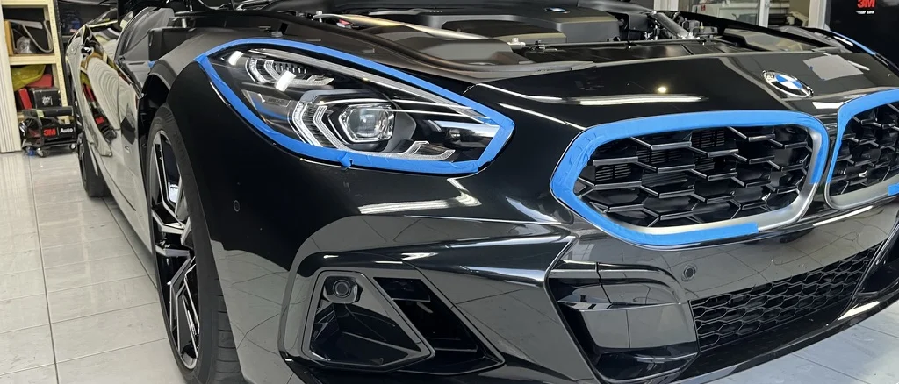
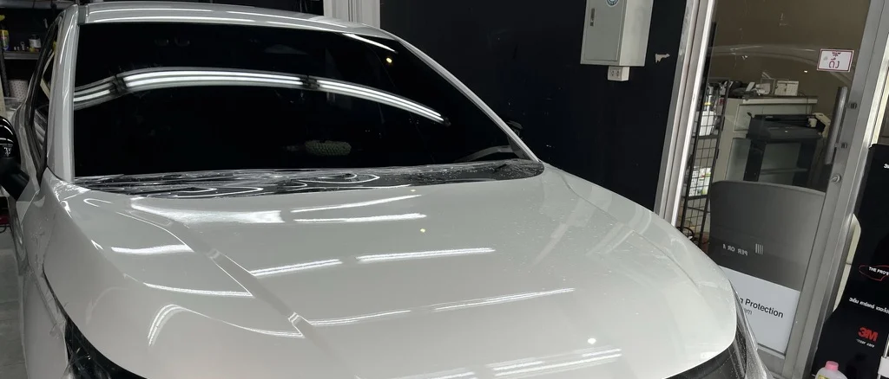
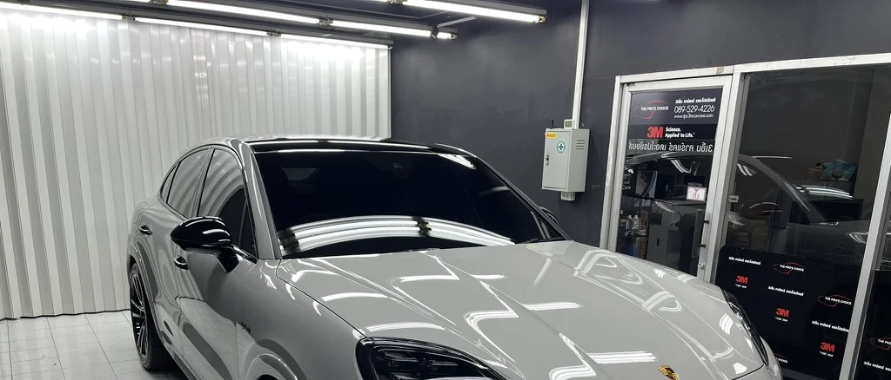
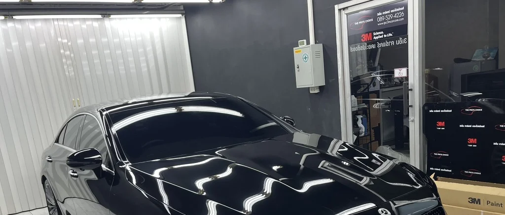
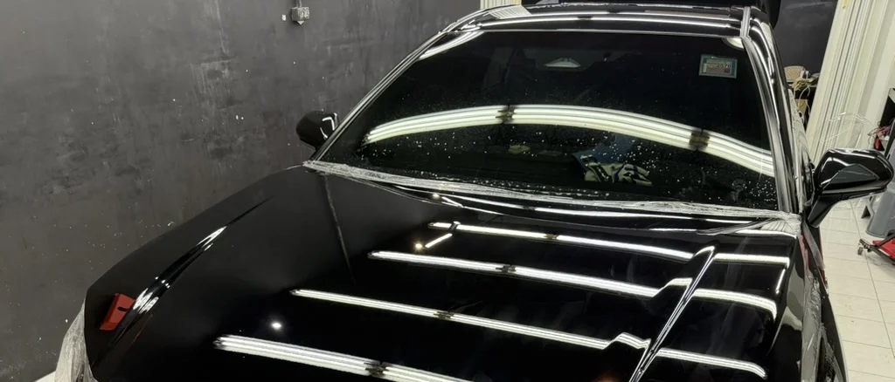
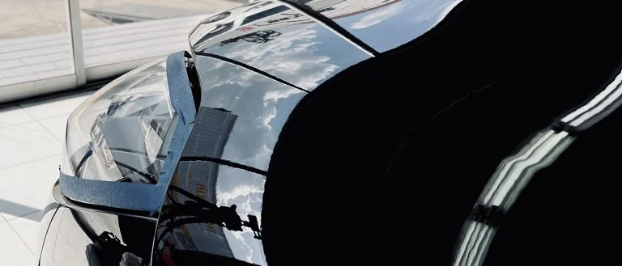
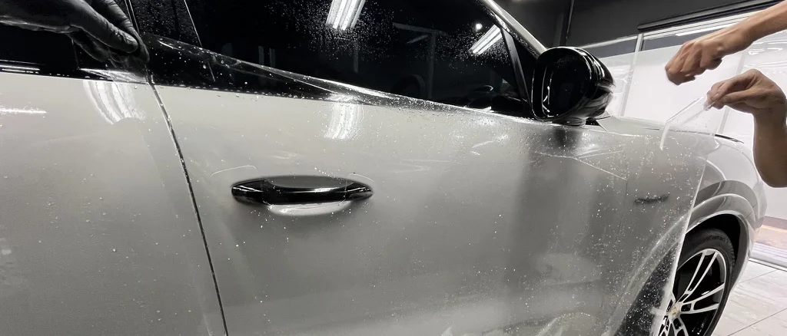
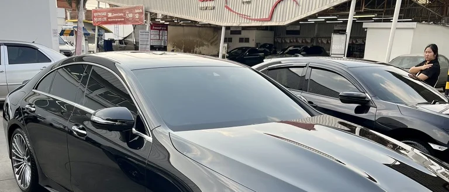
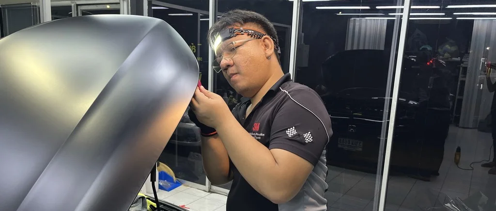

Partial Coverage
ปกป้องเฉพาะจุดเสี่ยง เช่น กันชนหน้า มือจับ หรือขอบประตู เหมาะกับผู้ที่ต้องการลดความเสียหายเฉพาะจุดโดยใช้งบประมาณที่เหมาะสม
UNDERSTANDING
หินดีด เศษทราย ฝุ่นสะสม และการใช้งานประจำวัน ล้วนสร้างความเสียหายเล็ก ๆ บนผิวรถได้ตลอดเวลา
บางรอยมองไม่เห็นทันที แต่สะสมไปเรื่อย ๆ จนพื้นผิวไม่เรียบเหมือนวันแรก และเมื่อเกิดขึ้นกับชั้นสีจริงแล้ว การแก้ไขมักมีต้นทุนสูงกว่าการป้องกันตั้งแต่ต้น
PPF จึงไม่ใช่ของตกแต่ง แต่เป็นชั้นป้องกันแบบกายภาพ ที่ถูกออกแบบมาเพื่อรับแรงแทนผิวสีจริงของรถ

WHAT PPF DOES
| คุณสมบัติ | ทำได้ | ไม่ได้ |
|---|---|---|
| ลดความเสียหายจากหินดีดระดับพื้นฐาน | ✓ | |
| ลดรอยขีดข่วนจากการใช้งานประจำวัน | ✓ | |
| ชะลอการเสื่อมของผิวสี | ✓ | |
| ป้องกันอุบัติเหตุรุนแรง | ✗ | |
| แทนการดูแลรักษารถทั้งหมด | ✗ |
PPF คือชั้นกันกระแทก ไม่ใช่เกราะกันทุกสถานการณ์ แต่ช่วยลดโอกาสเกิดความเสียหายจากการใช้งานจริงได้อย่างมีนัยสำคัญ
ROCK-CHIP REALITY
เมื่อรถวิ่งบนถนนที่มีเศษกรวดหรือฝุ่นสะสม ล้อของรถคันหน้าอาจสะบัดวัตถุขนาดเล็กขึ้นมา ด้วยความเร็วสูงพอที่จะสร้างความเสียหายกับชั้นสีได้
จุดที่ได้รับผลบ่อยที่สุดคือด้านหน้าของรถ เพราะเป็นบริเวณที่รับแรงกระแทกโดยตรงตลอดเวลา โดยเฉพาะรถที่วิ่งทางไกล ทางด่วน หรือใช้งานความเร็วสูงเป็นประจำ
PPF ไม่ได้ทำให้แรงกระแทกหายไป แต่ทำหน้าที่รับแรงแทนผิวสีจริง เพื่อให้ความเสียหายเกิดที่ฟิล์มก่อน ไม่ใช่ที่สีรถ
IMPACT ZONES
เป็นจุดที่รับแรงกระแทกจากหินดีดและเศษกรวดโดยตรงมากที่สุด
เป็นแนวที่เศษหินสามารถกระแทกได้ง่ายเมื่อรถวิ่งด้วยความเร็วสูง
เป็นบริเวณที่รับเศษทรายและสิ่งสกปรกจากพื้นถนนสะสมเป็นประจำ
เป็นจุดที่เกิดรอยจากการสัมผัสและการใช้งานในชีวิตประจำวันได้บ่อย
PROTECTION LEVEL

ปกป้องเฉพาะจุดเสี่ยง เช่น กันชนหน้า มือจับ หรือขอบประตู เหมาะกับผู้ที่ต้องการลดความเสียหายเฉพาะจุดโดยใช้งบประมาณที่เหมาะสม

ปกป้องบริเวณด้านหน้าของรถ เช่น กันชน ฝากระโปรง แก้มหน้า และกระจกมองข้าง เหมาะกับรถใช้งานประจำวันและรถที่วิ่งทางไกลบ่อย

ปกป้องทั้งคัน เหมาะกับรถใหม่ รถที่มีมูลค่าสูง หรือรถที่ต้องการรักษาสภาพระยะยาวอย่างจริงจัง
3M PPF FILM SYSTEMS
ฟิล์มใสกันรอยของ 3M ไม่ได้มีเพียงแบบเดียว แต่ถูกพัฒนาเป็นหลายระดับเพื่อให้เหมาะกับทั้งลักษณะการใช้งาน ระดับการปกป้อง และงบประมาณที่แตกต่างกัน
วัสดุทุกระดับใช้แนวคิดของฟิล์ม TPU เพื่อช่วยรับแรงกระแทกและลดความเสียหายต่อผิวสีรถ แต่แต่ละรุ่นจะต่างกันที่ความหนา ความใส ประสิทธิภาพ self-healing โครงสร้าง top-coat และระดับการใช้งานที่เหมาะสม

ระดับสูงสุดของกลุ่ม 3M PPF สำหรับผู้ที่ต้องการทั้งความใส ความทนทาน และระบบ self-healing ที่มีประสิทธิภาพสูงสุดในกลุ่ม
โครงสร้าง: Aliphatic TPU (Premium)
ความหนา: 200 ไมครอน
การรับประกัน: 9 ปี
เหมาะกับรถใหม่ รถมูลค่าสูง รถหรู หรือรถที่ต้องการการปกป้องทั้งคันในระยะยาว

จุดสมดุลระหว่างความทนทาน ความใส และความคุ้มค่า เหมาะสำหรับรถใช้งานจริงที่ต้องการการปกป้องในระดับสูง แต่ไม่จำเป็นต้องไปถึงรุ่นสูงสุด
โครงสร้าง: Aliphatic TPU
ความหนา: 190 ไมครอน
การรับประกัน: 7 ปี
เหมาะกับ SUV, EV และรถใช้งานทุกวันที่ต้องการ front protection หรือ full body แบบสมดุล

รุ่นที่ให้สมดุลของการปกป้องพื้นฐานและความคุ้มค่า เหมาะกับผู้ที่ต้องการเริ่มต้นติดตั้ง PPF อย่างจริงจัง ในระดับที่ใช้งานได้ดีในชีวิตประจำวัน
โครงสร้าง: Aliphatic TPU
ความหนา: 190 ไมครอน
การรับประกัน: 5 ปี
เหมาะกับรถครอบครัว รถใช้งานทั่วไป และผู้ที่ต้องการปกป้องเฉพาะด้านหน้าแบบคุ้มค่า

รุ่นเริ่มต้นของกลุ่ม 3M PPF สำหรับการปกป้องเฉพาะจุด หรือรถที่ต้องการลดความเสียหายในบริเวณที่เสี่ยงมากที่สุด
โครงสร้าง: Aliphatic TPU
ความหนา: 185 ไมครอน
การรับประกัน: 5 ปี
เหมาะกับกันชนหน้า มือจับ ขอบประตู หรือรถที่ต้องการเริ่มต้นจากการป้องกันเฉพาะจุด
QUICK COMPARISON
| รุ่น | ความหนา | Self-Healing | การรับประกัน | เหมาะกับใคร |
|---|---|---|---|---|
| Pro 200 Gloss | 200µm | สูงสุด | 9 ปี | รถหรู / รถใหม่ / ปกป้องทั้งคัน |
| 150 Gloss | 190µm | สูง | 7 ปี | SUV / EV / รถใช้งานทุกวัน |
| 100 Gloss | 190µm | มาตรฐาน | 5 ปี | รถครอบครัว / รถทั่วไป |
| 50 Gloss | 185µm | พื้นฐาน | 5 ปี | ติดเฉพาะจุด / เริ่มต้น |
KEY TECHNOLOGY
โครงสร้างหลักของ PPF คือ TPU (Thermoplastic Polyurethane) ซึ่งถูกออกแบบมาเพื่อช่วยรับแรงกระแทกและลดโอกาสที่แรงจะลงไปถึงชั้นสีจริง
แต่ละรุ่นมีระดับการฟื้นตัวของผิวฟิล์มไม่เท่ากัน รุ่นสูงกว่าจะให้การฟื้นตัวจากรอยผิวตื้นได้ดีกว่า โดยเฉพาะเมื่อได้รับความร้อนในระดับที่เหมาะสม
ชั้นผิวด้านบนของฟิล์มมีผลต่อความลื่นของผิว ความง่ายในการทำความสะอาด และภาพรวมของการดูแลรักษาหลังติดตั้ง
รุ่นที่สูงขึ้นมักให้ความใสและความเรียบของผิวฟิล์มที่ดีกว่า ซึ่งมีผลกับความรู้สึกโดยรวมของรถหลังติดตั้ง
HOW TO CHOOSE
หากคุณต้องการทั้งความใส ความทนทาน และการปกป้องระยะยาวในระดับบนสุด Pro Series 200 Gloss คือรุ่นที่เหมาะที่สุด
หากคุณต้องการฟิล์มที่อยู่ในระดับสูง แต่ยังคงความสมเหตุสมผลในเชิงงบประมาณ Series 150 Gloss จะเป็นจุดสมดุลที่ดีมาก
สำหรับผู้ที่ต้องการปกป้องรถจริง แต่ยังไม่จำเป็นต้องไปถึงระดับสูงสุด Series 100 Gloss มักเป็นตัวเลือกที่ตัดสินใจง่าย
ถ้าคุณต้องการเริ่มจากกันชนหน้า มือจับ หรือขอบประตู Series 50 Gloss จะเหมาะกับการเริ่มต้นแบบเฉพาะจุด
SELF-HEALING
ฟิล์ม PPF บางรุ่นมีคุณสมบัติ self-healing ซึ่งหมายถึงความสามารถของผิวฟิล์มในการฟื้นตัวจากรอยเล็ก ๆ บางประเภท เมื่อได้รับความร้อนในระดับที่เหมาะสม
สิ่งสำคัญคือไม่ควรเข้าใจว่า “รอยทุกแบบจะหายเอง” เพราะคุณสมบัตินี้มักทำงานกับรอยผิวตื้นบางชนิด ไม่ใช่รอยลึกหรือความเสียหายจากแรงกระแทกรุนแรง
การมอง self-healing อย่างถูกต้อง คือมองว่าเป็นคุณสมบัติเสริมที่ช่วยให้ฟิล์มดูดีได้นานขึ้น ไม่ใช่เหตุผลเดียวในการตัดสินใจติดตั้ง
PPF VS CERAMIC
| PPF | Ceramic | |
|---|---|---|
| ป้องกันแรงกระแทก | ✓ | |
| ลดรอยขีดข่วนจากการใช้งาน | ✓ | |
| ช่วยให้ทำความสะอาดง่ายขึ้น | ✓ | ✓ |
| เพิ่มความเงาและพฤติกรรมผิว | ✓ |
PPF เน้นการปกป้องจากแรงกระแทก ส่วน Ceramic เน้นการควบคุมพฤติกรรมผิวและการดูแลง่ายขึ้น หลายกรณีสามารถทำงานร่วมกันได้
REAL-WORLD USE
มักเริ่มจาก Partial Coverage ในจุดที่เสี่ยง เช่น กันชนหน้า มือจับ และขอบประตู
Front Protection มักเหมาะกว่า เพราะด้านหน้ารถรับแรงกระแทกจากหินดีดมากที่สุด
Full Vehicle Protection จะเหมาะกับผู้ที่ต้องการรักษาสภาพผิวสีระยะยาวอย่างจริงจัง
มักได้ประโยชน์จาก PPF มากขึ้น เพราะรอยเล็ก ๆ และความเสียหายบนผิวสีจะเห็นได้ง่ายกว่า
INSTALLATION CONTROL
ฟิล์มใสกันรอยเป็นวัสดุที่ต้องการความแม่นยำในการติดตั้งสูง เพราะผลลัพธ์ไม่ได้ขึ้นกับตัววัสดุเพียงอย่างเดียว แต่รวมถึงรายละเอียดของงานติดตั้งด้วย
ขั้นตอนสำคัญประกอบด้วย Template Cutting, Edge Wrap เท่าที่โครงสร้างรถรองรับ และการควบคุมความสะอาดระหว่างติดตั้ง

SYSTEM POSITION
Wash → Correction → PPF → Maintenance
หากผิวไม่เรียบก่อนติดตั้ง PPF จะปิดทับความไม่สมบูรณ์นั้นไว้ ดังนั้นสภาพผิวก่อนเริ่มงานจึงเป็นส่วนหนึ่งของผลลัพธ์หลังติดตั้งเสมอ
RELATED SYSTEMS
ปรับระดับผิวก่อนการปกป้อง
ควบคุมพฤติกรรมผิวบนฟิล์มและช่วยให้ดูแลง่ายขึ้น
ดูแลฟิล์มหลังติดตั้งให้คงสภาพอย่างเหมาะสม
CONSULTATION
แจ้งรุ่นรถ ลักษณะการใช้งาน และสิ่งที่คุณกังวลกับเราได้ เพื่อช่วยแนะนำระดับการปกป้องที่เหมาะสมกับรถของคุณ
ปรึกษา / นัดหมาย